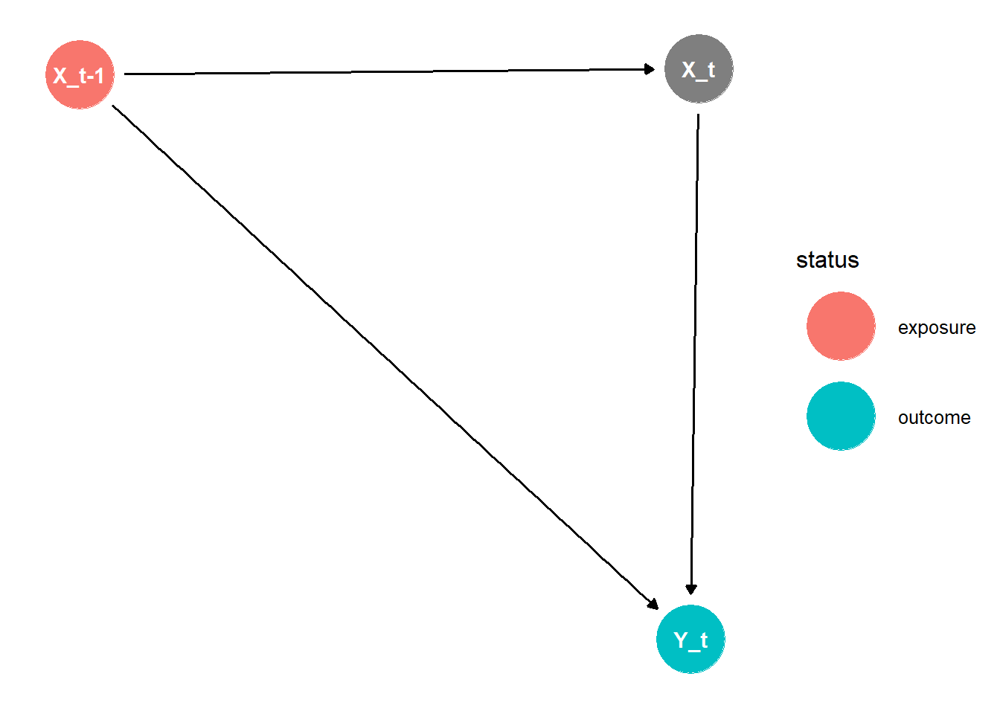
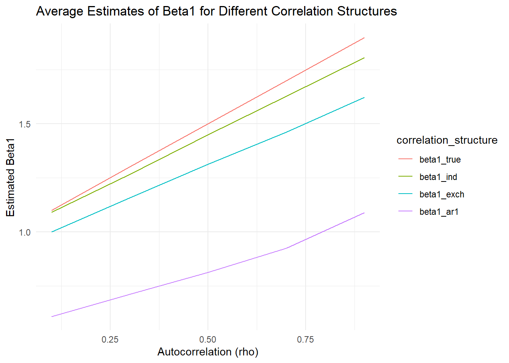

# Load packages
library(dagitty)
library(tidyverse)
library(ggdag)
library(lme4)
library(jtools)
library(gee)
library(geex)
library(nlme)Data Generating Models of Qian et al. (2020)
1 Introduction
In this document, I will recreate the data generating models presented by Qian et al. (2020), accompanied by visual representations of these models.
2 Simple Concrete Example: Without Treatment
2.1 Example in section 2.2 of Qian et al. (2020)
As a concrete example, consider the case where each individual is observed for 2 time points (\(T_i = 2\)), and the covariate at the second time point is the lag-1 outcome: \(X_{i2} = Y_{i2}\).
By lagging the outcome, we essentially have three time points: \(X_{i1}\), \(X_{i2} = Y_{i2}\), and \(Y_{i3}\).
Suppose the variables are generated from the following multilevel linear model (MLM) with a random intercept:
\[ b_i \sim N(0, \sigma_u^2), \]
\[ X_{i1} \sim N(0, \sigma_{X_1}^2) \text{ independently of } b_i, \]
\[ Y_{i2} \mid X_{i1}, b_i \sim N(\beta_0 + \beta_1 X_{i1} + b_i, \sigma_\epsilon^2), \]
\[ X_{i2} = Y_{i2}, \]
\[ Y_{i3} \mid X_{i1}, Y_{i2}, X_{i2}, b_i \sim N(\beta_0 + \beta_1 X_{i2} + b_i, \sigma_\epsilon^2). \]
2.2 Translating the notation
In the table below, we will provide the translation of original notation in Qian et al. (2020) to notation more common in psychological research
| Parameter | Original | New |
|---|---|---|
| Fixed intercept | \(\alpha_0\) | \(\gamma_{00}\) |
| Fixed slope for \(X_{it}\) | \(\beta_1\) | \(\beta_1\) |
| Random intercept | \(b_{i0}\) | \(u_{0i}\) |
| Residual variance of Error term | \(\sigma_\epsilon^2\) | \(\sigma_e^2\) |
| Covariate | \(X_{it}\) | \(Z_{it}\) |
Let’s now rewrite the model in this notation
\[ u_{0i} \sim N(0, \sigma_u^2), \]
\[ Z_{i1} \sim N(0, \sigma_{Z_1}^2) \text{ independently of } u_{0i}, \]
\[ Y_{i2} \mid Z_{i1}, u_{0i} \sim N(\gamma_{00} + \beta_1 Z_{i1} + u_{0i}, \sigma_e^2), \]
\[ Z_{i2} = Y_{i2}, \]
\[ Y_{i3} \mid Z_{i1}, Y_{i2}, Z_{i2}, u_{0i} \sim N(\gamma_{00} + \beta_1 Z_{i2} + u_{0i}, \sigma_e^2). \]
2.3 Visualizing the Model
We may now draw the DAG for this model


Note that there is an open biasing path from \(Y_2\) to \(Z_2\) in the DAG: the predictor/covariate \(Z_2\) is caused by (in this case equivalent to) the previous outcome \(Y_2\)—and thus this time-varying covariate is endogenous.
2.4 Generating the data
Let’s now generate the data according to this model.
set.seed(123)
n_i <- 5000 # number of individuals
sigma_u <- 1 # variance of random intercept
sigma_Z1 <- 1 # variance of Z1
sigma_e <- 0.5 # residual variance
beta_1 <- 0.8 # overall slope
gamma_00 <- 2 # overall intercept
data_list <- list()
# simulate data
for (i in 1:n_i){
u_0i <- rnorm(1, 0, sigma_u)
Z_i2_lag <- Z_i1 <- rnorm(1, 0, sigma_Z1)
Y_i2 <- rnorm(1, gamma_00 + beta_1 * Z_i1 + u_0i, sigma_e)
Z_i3_lag <- Z_i2 <- Y_i2
Y_i3 <- rnorm(1, gamma_00 + beta_1 * Z_i2 + u_0i, sigma_e)
# Store the data in a list
subject_data <- data.frame(
id = i,
time = 1:2,
Y = c(Y_i2, Y_i3),
Z_lag1 = c(Z_i2_lag, Z_i3_lag))
data_list[[i]] <- subject_data
}
# Combine all subjects' data into a single data frame
section2.2data_long <- do.call(rbind, data_list)2.5 Estimating the model
Let’s now estimate the model using a multilevel linear model (MLM) and a generalized estimating equation (GEE) model.
# Multilevel Linear Model
section2.2_mlm_reml <- lmer(Y ~ Z_lag1 + (1 | id), data = section2.2data_long)
section2.2_mlm_mle <- lmer(Y ~ Z_lag1 + (1 | id), data = section2.2data_long, REML = FALSE)
# Generalized Estimating Equations
section2.2_gee_ind <- gee(Y ~ Z_lag1, id = id, data = section2.2data_long, family = gaussian, corstr = "independence")(Intercept) Z_lag1
1.794094 1.002560 section2.2_gee_exch <- gee(Y ~ Z_lag1, id = id, data = section2.2data_long, family = gaussian, corstr = "exchangeable")(Intercept) Z_lag1
1.794094 1.002560 section2.2_gee_ar1 <- gee(Y ~ Z_lag1, id = id, data = section2.2data_long, family = gaussian, corstr = "AR-M", Mv = 1)(Intercept) Z_lag1
1.794094 1.002560 section2.2_gee_unstr <- gee(Y ~ Z_lag1, id = id, data = section2.2data_long, family = gaussian, corstr = "unstructured")(Intercept) Z_lag1
1.794094 1.002560 # Generalized linear model (OLS): assumes independence of observations
section2.2_glm <- glm(Y ~ Z_lag1, data = section2.2data_long, family = gaussian)
# Marginal linear model (GLS)
section2.2_gls_symm_mle <- nlme::gls(Y ~ Z_lag1, data = section2.2data_long, correlation = corSymm(form = ~ 1 | id), method = "ML")
section2.2_gls_compsymm_mle <- nlme::gls(Y ~ Z_lag1, data = section2.2data_long, correlation = corCompSymm(form = ~ 1 | id), method = "ML")
section2.2_coefs <- data.frame(
row.names = c("Intercept", "Z_lag1"),
MLM_reml = fixef(section2.2_mlm_reml),
MLM_mle = fixef(section2.2_mlm_mle),
GEE_ind = coef(section2.2_gee_ind),
GEE_exch = coef(section2.2_gee_exch),
GEE_ar1 = coef(section2.2_gee_ar1),
GEE_unstr = coef(section2.2_gee_unstr),
GLM = coef(section2.2_glm),
GLS_Symm = coef(section2.2_gls_symm_mle),
GLS_CompSymm = coef(section2.2_gls_compsymm_mle)
)
knitr::kable(caption = "Section 2.2: Estimated coefficients from the MLM and GEE models", section2.2_coefs, digits = 3, format = "html")| MLM_reml | MLM_mle | GEE_ind | GEE_exch | GEE_ar1 | GEE_unstr | GLM | GLS_Symm | GLS_CompSymm | |
|---|---|---|---|---|---|---|---|---|---|
| Intercept | 1.999 | 1.999 | 1.794 | 1.999 | 1.999 | 1.999 | 1.794 | 1.999 | 1.999 |
| Z_lag1 | 0.796 | 0.796 | 1.003 | 0.796 | 0.796 | 0.796 | 1.003 | 0.796 | 0.796 |
We can clearly see that the MLM and GEE models provide exactly the same estimates for the fixed intercept and fixed regression coefficient, with the exception of the GEE with independence working correlation structure.
According to Pepe and Anderson (1994), this is the only structure that can avoid bias in the estimation of the fixed effects (i.e., that has a valid marginal interpretation).
As a reminder, the fixed effects were specified as \(\gamma_{00} = 2\) and \(\beta_1 = 0.8\). Thus, we can see that all models except the GEE with independence working correlation structure returns estimates that are very close to the true values—which represented the conditional mean of \(Y\) given \(Z\) and \(u_{0i}\) (rather than the marginal mean of \(Y\) given \(Z\)).
To see why this makes sense, it is important to realize that the parameter estimates represent the parsimonious conditional relationship
\[ E[Y_{it+1} \mid Z_{it}, u_{0i}] = \gamma_{00} + \beta_1 Z_{it} + u_{0i} \]
And not the marginal relationship, which according to Qian et al. (2020) is given by:
\[ E[Y_{i2} \mid Z_{i1}] = \gamma_{00} + \beta_1 Z_{i1} \]
\[ E[Y_{i3} \mid Z_{i2}] = (1- \rho \zeta - \rho ) \gamma_{00} + [(1-\rho \zeta) \beta_1 + \rho] Z_{i2} \]
Let’s confirm this by calculating the true marginal effect
sigma2_u0 = sigma_u^2
sigma2_e = sigma_e^2
rho = sigma2_u0 / (sigma2_u0 + sigma2_e)
rho*beta_1[1] 0.64sigma2_Z1 = sigma_Z1^2
zeta = (beta_1 * sigma2_Z1) / (beta_1 * sigma2_Z1 + sigma2_u0 + sigma2_e)
# Now let's compute the marginal effect of Z1 on Y2
marginal_intercept_Z1_Y2 <- gamma_00
marginal_slope_Z1_Y2 <- beta_1
marginal_intercept_Z2_Y3 <- (1 - rho * zeta - rho) * gamma_00
marginal_slope_Z2_Y3 <- ((1 - rho * zeta) * beta_1 + rho)This is not correct, but how do we calculate the true marginal effects for intercept and slope?
2.6 Intermezzo: What are marginal effects/models?
Marginal models are a class of models that are used to estimate the population average effect of a covariate on an outcome. This may be useful, for instance, when prediction or indeed complete modelling of the data are not the main goal of an analysis (Pepe and Anderson, 1994).
“Consider, for example, the future practice of screening for risk of respiratory disease, where one might simply ascertain Vitamin A deficiency, weight, height and other covariates at a single time point and make a determination of the child’s risk based on these measurements.” (Pepe and Anderson, 1994)
Here, the cross-sectional model is of primary interest for use in future screening practices and an in-depth model of longitudinal data is of secondary interest (Pepe and Anderson, 1994).
This contrasts with psychological research, where the cross-sectional model is often deemed problematic in the context of longitudinal data analysis, because it conflates (rather than separates) within-subject and between-subject effects. Instead, we tend to be much more interested in (1) the model that best describes the data (i.e., has the best model fit) and (2) the “why” question: complete model of the effects (including within- and between-person effects). What differs here is the aim of the study.
In what situations may psychological researchers be primarily interested in marginal effects over finding the best description of the data?
A clinical psychologist may be interested in screening for depression among a large sample of patients in a primary care setting.
A school psychologist may focus on understanding how classroom behaviors (e.g., attention problems, peer conflicts) relate to academic achievement across a large student population.
A social psychologist may study the impact of discrimination on mental health outcomes across different demographic groups.
A developmental psychologist may study how early childhood factors (e.g., parental education, socioeconomic status, early trauma) influence cognitive development in children.
Whether marginal or conditional models are preferred depends simply upon the research question and aim of the study:
“We do not suggest that marginal models are preferable in general to conditional models. In Section 1 we provided one example where the marginal model is, in fact, preferable but in many cases it will not be. Indeed, which model should be used depends entirely on the questions to be addressed with the data. If a good description of the process generating the data is required then fully conditional or random effects models might be pursued.” (Pepe and Anderson, 1994)
2.7 Intermezzo: What is the difference between REML and MLE?
When fitting a multilevel linear model (MLM) we can choose between restricted maximum likelihood (REML) and maximum likelihood estimation (MLE). In REML, \(\sigma^2\) and \(\rho\) (intra class correlation) are essentially considered nuisance parameters, which makes sure that small sample bias is reduced. However, since we do not obtain the complete log likelihood, we cannot compare models using the likelihood ratio test. When sample sizes are sufficiently large, the two methods are asymptotically equivalent.
the variance components \(\sigma^2_u\) are estimated by maximizing the likelihood of the residuals, conditional on the fixed effects. In MLE, the residual variance \(\sigma^2\) and the variance components \(\sigma^2_u\) are estimated by maximizing the likelihood of the residuals, conditional on the fixed effects and the random effects.
The difference between the two methods lies in the way they estimate the variance components of the model.
source: STAT 437: 007. Linear Marginal Models: Likelihood, Inference, and Asymptotics (Theory)
3 Main Simulation of Qian et al. (2020): With Treatment
3.1 Original Section: “4. Simulation”
In the simulation, we considered three generative models (GMs), all of which have an endogenous covariate. In the first two GMs, the endogenous covariate \(X_{it}\) equals the previous outcome \(Y_{it}\) plus some random noise, so the conditional independence assumption (10) is valid. In GM 3, the endogenous covariate depends directly on \(b_i\), violating assumption (10). The details of the generative models are described below.
In GM1, we considered a simple case with only a random intercept and a random slope for \(A_{it}\), so that \(Z_{i(t_0)} = Z_{i(t_2)} = 1\) in model (7). The outcome is generated as:
\[ Y_{it+1} = \alpha_0 + \alpha_1 X_{it} + b_{i0} + A_{it} (\beta_0 + \beta_1 X_{it} + b_{i2}) + \epsilon_{it+1}. \]
The random effects \(b_{i0} \sim N(0, \sigma_{b0}^2)\) and \(b_{i2} \sim N(0, \sigma_{b2}^2)\) are independent of each other. The covariate is generated as \(X_{i1} \sim N(0, 1)\), and for \(t \geq 2\),
\[ X_{it} = Y_{it} + N(0, 1). \]
The randomization probability \(p_t\) is constant at \(1/2\). The exogenous noise is \(\epsilon_{it+1} \sim N(0, \sigma_\epsilon^2)\).
In GM2, we considered the case where \(Z_{i(t_0)} = Z_{i(t_2)} = 1\), with time-varying randomization probability. The outcome is generated as:
\[ Y_{it+1} = \alpha_0 + \alpha_1 X_{it} + b_{i0} + b_{i1} X_{it} + A_{it} (\beta_0 + \beta_1 X_{it} + b_{i2} + b_{i3} X_{it}) + \epsilon_{it+1}. \]
The random effects \(b_{ij} \sim N(0, \sigma_{b_j}^2)\), for \(0 \leq j \leq 3\), are independent of each other. The covariate is generated as \(X_{i1} \sim N(0, 1)\), and for \(t \geq 2\),
\[ X_{it} = Y_{it} + N(0, 1). \]
The randomization probability depends on \(X_{it}\):
\[ p_t = 0.7 \cdot 1(X_{it} > -1.27) + 0.3 \cdot 1(X_{it} \leq -1.27), \]
where \(1(\cdot)\) represents the indicator function, and the cutoff \(-1.27\) was chosen so that \(p_t\) equals 0.7 or 0.3 for about half of the time. The exogenous noise is \(\epsilon_{it+1} \sim N(0, \sigma_\epsilon^2)\).
GM3 is the same as GM 1, except that the covariate \(X_{it}\) depends directly on \(b_i\):
\[ X_{i1} \sim N(b_{i0}, 1), \quad X_{it} = Y_{it} + N(b_{i0}, 1) \text{ for } t \geq 2. \] We chose the following parameter values:
\[ \alpha_0 = -2, \quad \alpha_1 = -0.3, \quad \beta_0 = 1, \quad \beta_1 = 0.3, \]
\[ \sigma_{b0}^2 = 4, \quad \sigma_{b1}^2 = \frac{1}{4}, \quad \sigma_{b2}^2 = 1, \quad \sigma_{b3}^2 = \frac{1}{4}, \quad \sigma_\epsilon^2 = 1. \]
4 Generative Model 1
4.1 Translation of Notation
In the table below, we will provide the translation of original notation in Qian et al. (2020) to notation more common in psychological research
| Parameter | Original | New |
|---|---|---|
| Fixed intercept | \(\alpha_0\) | \(\gamma_{00}\) |
| Fixed slope for \(X_{it}\) | \(\alpha_1\) | \(\gamma_{01}\) |
| Random intercept | \(b_{i0}\) | \(u_{0i}\) |
| Random slope for \(A_{it}\) | \(b_{i2}\) | \(u_{1i}\) |
| Error term | \(\epsilon_{it+1}\) | \(e_{it+1}\) |
| Fixed effect of \(A_{it}\) | \(\beta_0\) | \(\gamma_{10}\) |
| Interaction effect of \(A_{it}\) and \(X_{it}\) | \(\beta_1\) | \(\gamma_{11}\) |
| Covariate | \(X_{it}\) | \(Z_{it}\) |
| Treatment | \(A_{it}\) | \(X_{it}\) |
Let’s first state the original model:
\[ Y_{it+1} = \alpha_0 + \alpha_1 X_{it} + b_{i0} + A_{it} (\beta_0 + \beta_1 X_{it} + b_{i2}) + \epsilon_{it+1}. \]
Using this new notation, we may thus rewrite GM1 as a within model:
\[ Y_{it+1} = \beta_{0i} + \beta_{1i} X_{it} + e_{it+1}, \]
where:
\[ \beta_{0i} = \gamma_{00} + \gamma_{01} Z_{it} + u_{0i} \quad \text{with} \quad u_{0i} \sim \mathcal{N}(0, \sigma^2_u), \]
\[ \beta_{1i} = \gamma_{10} + \gamma_{11} Z_{it} + u_{1i} \quad \text{with} \quad u_{1i} \sim \mathcal{N}(0, \sigma^2_u). \]
Combining these two equations, the model can be expressed as:
\[ Y_{it+1} = \gamma_{00} + \gamma_{01} Z_{it} + u_{0i} + X_{it} (\gamma_{10} + \gamma_{11} Z_{it} + u_{1i}) + e_{it+1}. \]
4.2 Visualzing the Model
As mentioned by Ellen in the last meeting (17-10):
“Conventional DAGs do not only represent main effects but rather the combination of main effects and interactions. Once you have drawn your DAG, you already assume that any variables pointing to the same outcome can modify the effect of the others pointing to the same outcome.” (stackexchange)
For \(t = 1\), the DAG and path diagram are as follows:


Note that the interaction between \(X_{it}\) and \(Z_{it}\) is not explicitly shown in the DAG, but is explicit in the path diagram. This is because the interaction is a model assumption, which is not explicitly represented in the non-parametric DAG.
For \(t \geq 2\), the DAG and path diagram are as follows:


So the DAG for the first two observations looks like

The model is fitted as
gm1_mlm <- lmer(Y ~ Z * X + (1 + X| id), data = data)5 Generative Model 2
5.1 Translation of Notation
Now we need to translate more parameters:
| Parameter | Original | New |
|---|---|---|
| Fixed intercept | \(\alpha_0\) | \(\gamma_{00}\) |
| Fixed slope for \(X_{it}\) | \(\alpha_1\) | \(\gamma_{10}\) |
| Random intercept | \(b_{i0}\) | \(u_{0i}\) |
| Random slope for \(X_{it}\) | \(b_{i1}\) | \(u_{1i}\) |
| Fixed effect of \(A_{it}\) | \(\beta_0\) | \(\gamma_{20}\) |
| Interaction effect of \(A_{it}\) and \(X_{it}\) | \(\beta_1\) | \(\gamma_{30}\) |
| Random slope for \(A_{it}\) | \(b_{i2}\) | \(u_{2i}\) |
| Random interaction effect for \(A_{it} \times X_{it}\) | \(b_{i3}\) | \(u_{3i}\) |
| Error term | \(\epsilon_{it+1}\) | \(e_{it+1}\) |
| Covariate | \(X_{it}\) | \(Z_{it}\) |
| Treatment | \(A_{it}\) | \(X_{it}\) |
Let’s first restate the original model:
\[ Y_{it+1} = \alpha_0 + \alpha_1 X_{it} + b_{i0} + b_{i1} X_{it} + A_{it} (\beta_0 + \beta_1 X_{it} + b_{i2} + b_{i3} X_{it}) + \epsilon_{it+1}. \]
Using the psychological notation, we rewrite GM2 as a within-person model:
\[ Y_{it+1} = \beta_{0i} + \beta_{1i} Z_{it} + \beta_{2i} X_{it} + \beta_{3i} X_{it} Z_{it} + e_{it+1}, \]
with:
\[ \beta_{0i} = \gamma_{00} + u_{0i} \quad \text{where} \quad u_{0i} \sim \mathcal{N}(0, \sigma^2_u), \]
\[ \beta_{1i} = \gamma_{10} + u_{1i} \quad \text{where} \quad u_{1i} \sim \mathcal{N}(0, \sigma^2_u), \]
\[ \beta_{2i} = \gamma_{20} + u_{2i} \quad \text{where} \quad u_{2i} \sim \mathcal{N}(0, \sigma^2_u), \]
\[ \beta_{3i} = \gamma_{30} + u_{3i} \quad \text{where} \quad u_{3i} \sim \mathcal{N}(0, \sigma^2_u). \]
Combining these, the full model becomes:
\[ Y_{it+1} = (\gamma_{00} + u_{0i}) + (\gamma_{10} + u_{1i}) Z_{it} + (\gamma_{20} + u_{2i}) X_{it} + (\gamma_{30} + u_{3i}) X_{it} Z_{it} + e_{it+1}. \]
5.2 Visualizing the Model
The model is fitted as
gm2_mlm <- lmer(Y ~ Z * X + (Z * X | id), data = data)6 Generative Model 3
6.1 Translation of Notation
…
6.2 Visualizing the Model
…
7 Diggle (2002)
In “Longitudinal Data Analysis” bij Diggle et al. (2002), there is another example:
The following data generating mechanism was used:
\[Y_{it} = \gamma_0 + \gamma_1 X_{it} + \gamma_2 X_{it-1} + b_i + e_{it} \quad \text{where} \quad b_i \sim N(0,1), \quad e_{it} \sim N(0,1),\]
\[ X_{it} = \rho X_{it-1} + \epsilon_{it} \quad \text{where} \quad \epsilon_{it} \sim N(0,1). \]
where \(b_i\), \(e_{it}\), and \(\epsilon_{it}\) are mutually independent.
This data generating mechanism has the following DAG
Diggle2002_DAG <- dagitty('dag {
bb="0,0,1,1"
"X_t-1" [exposure,pos="0.290,0.343"]
X_t [pos="0.439,0.344"]
Y_t [outcome,pos="0.437,0.246"]
"X_t-1" -> X_t
"X_t-1" -> Y_t
X_t -> Y_t
}')
ggdag::ggdag_status(Diggle2002_DAG) + theme_dag()
For a range of correlations (\(\rho = 0.9–0.1\)) they simulated 100 data sets each of which contained data on \(m = 200\) subjects with up to 10 observations per subject. The number of observations for each subject, \(n_i\), was generated as a uniform random variable between 2 and 10.
Because missing data did not help estimation, I changed this to 10 observations for each subject.
In this case, the true marginal relationship of the fixed slope between \(X_{it}\) and \(Y_{it}\) is given by
\[\beta_1 = \gamma_1 + \rho \cdot \gamma_2\]
# Load necessary libraries
library(geepack)
# Simulation parameters
set.seed(123)
n_subjects <- 200 # Number of subjects
max_time <- 10 # Maximum number of observations per subject
n_sim <- 1000 # Number of simulations
gamma_0 <- 0
gamma_1 <- 1
gamma_2 <- 1
rho_values <- seq(0.9, 0.1, by = -0.2) # Range of autocorrelations
# Compute true marginal means for the fixed slope
true_marginal_b1 <- data.frame(
rho = rho_values,
beta1 = gamma_1 + rho_values * gamma_2
)
# Function to generate data for a single simulation
generate_data <- function(rho) {
data_list <- list()
for (i in 1:n_subjects) {
# n_i <- sample(2:max_time, 1) # Random number of observations (2 to 10)
n_i <- 10 # or fixed number of observations
X_it <- numeric(n_i)
Y_it <- numeric(n_i)
b_i <- rnorm(1, 0, 1) # Random intercept
e_it <- rnorm(n_i, 0, 1)
# Generate covariate X_it with autoregressive structure
X_it[1] <- rnorm(1, 0, 1) # Initial value for X_it
for (t in 2:n_i) {
X_it[t] <- rho * X_it[t-1] + rnorm(1, 0, sqrt(1 - rho^2))
}
# Generate outcome Y_it based on current and lagged values of X_it
Y_it[1] <- gamma_0 + gamma_1 * X_it[1] + b_i + e_it[1]
if (n_i > 1) {
for (t in 2:n_i) {
Y_it[t] <- gamma_0 + gamma_1 * X_it[t] + gamma_2 * X_it[t-1] + b_i + e_it[t]
}
}
# Store the data in a list
subject_data <- data.frame(
subject = i,
time = 1:n_i,
Y = Y_it,
X = X_it
)
data_list[[i]] <- subject_data
}
# Combine all subjects' data into a single data frame
data <- do.call(rbind, data_list)
return(data)
}
# Simulation loop
results <- data.frame()
for (rho in rho_values) {
beta1_estimates <- matrix(NA, n_sim, 3) # Store beta1 estimates for each correlation structure
for (sim in 1:n_sim) {
# Generate data for this simulation
sim_data <- generate_data(rho)
# Fit GEE models with different working correlation structures
gee_ind <- geeglm(Y ~ X, id = subject, data = sim_data, corstr = "independence")
gee_exch <- geeglm(Y ~ X, id = subject, data = sim_data, corstr = "exchangeable")
gee_ar1 <- geeglm(Y ~ X, id = subject, data = sim_data, corstr = "ar1")
# Store the estimated beta1 for each model
beta1_estimates[sim, 1] <- coef(gee_ind)["X"]
beta1_estimates[sim, 2] <- coef(gee_exch)["X"]
beta1_estimates[sim, 3] <- coef(gee_ar1)["X"]
}
# Calculate average estimates of beta1 for each correlation structure
mean_estimates <- colMeans(beta1_estimates, na.rm = TRUE)
results <- rbind(results, data.frame(
rho = rho,
beta1_ind = mean_estimates[1],
beta1_exch = mean_estimates[2],
beta1_ar1 = mean_estimates[3]
))
}
# format and save results
results_complete <- cbind(results, beta1_true = true_marginal_b1$beta1) %>%
select(rho, beta1_true, beta1_ind, beta1_exch, beta1_ar1)
saveRDS(results_complete, file = "Diggle2002_results.rds")| rho | beta1_true | beta1_ind | beta1_exch | beta1_ar1 |
|---|---|---|---|---|
| 0.9 | 1.9 | 1.806 | 1.624 | 1.089 |
| 0.7 | 1.7 | 1.628 | 1.462 | 0.924 |
| 0.5 | 1.5 | 1.449 | 1.312 | 0.813 |
| 0.3 | 1.3 | 1.266 | 1.157 | 0.711 |
| 0.1 | 1.1 | 1.091 | 0.999 | 0.608 |

These findings are somewhat similar to the original simulation results found by Diggle et al. (2002).

The discrepancy may be due to a slight difference/mistake in its implementation. Nevertheless, like Diggle et al. (2002), we can see that the GEE with working independence is the least biased in terms of marginal effects, followed by the exchangeable and AR(1) working correlation structures.